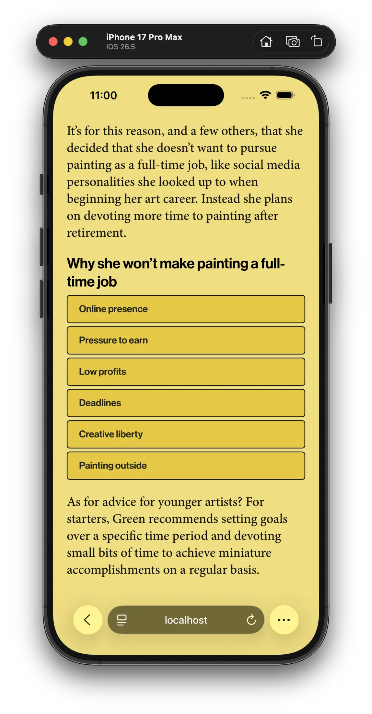
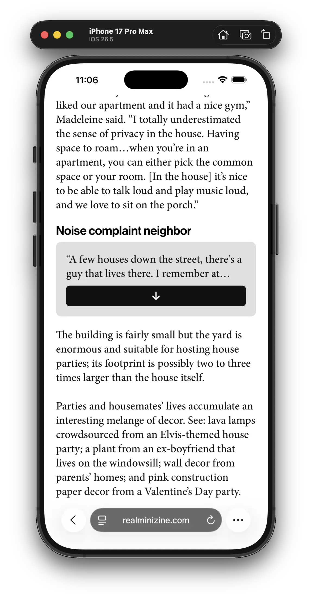
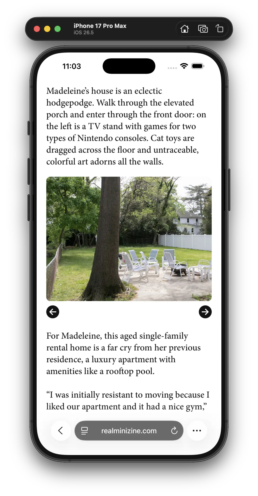
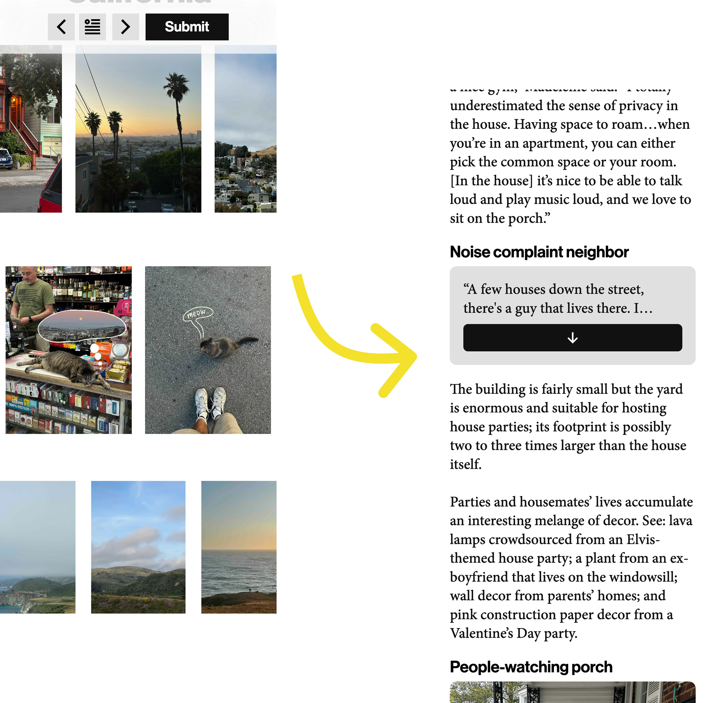

minizine.



ROLE
Lead Contributor
(No true title)
TIMELINE
Ongoing
TEAM
1-2 other contributors
SKILLS
Figma
Illustrator & Photoshop
React, JS, HTML, CSS
Cloud Hosting
BACKGROUND
I help run minizine, a digital-native, mobile-only publication featuring the lives of everyday people. Pieces rotate on a regular basis and include an expanding array of Javascript-based storytelling components.

PROBLEM
Improve upon current mobile content
Existing publications still horizontally condense desktop text to create a mobile experience. How can minizine create a foundation for a more engaging experience?
RESEARCH
Looking towards others for inspiration and shortcomings
PLACEHOLDER
PLACEHOLDER
ITERATIONS
From confusing to intuitive
The first iteration completely abandoned standard web layouts and instead mimicked those found in magazines. When observing users, I noticed that they usually struggled to interact with the page, like tapping static elements because they mistook them as interactive.

SOLUTION
Set foundational rules for experience
PLACEHOLDER
PLACEHOLDER
TOWARDS THE FUTURE
Improving upon foundation
I observe users' initial interactions and receive feedback from others. Based on this data, future versions still have some immediate areas for improvement.
Larger buttons & more swipes
Buttons are still a little too small for fingers. Swipe gesture recognition is missing in components that visually imply it's possible, which confuses users.
Adjusting body font
The strokes in the body font don't look great across the interface. Font trends towards dynamic, bolder fonts provide opportunities for something better.
Navigation-based storytelling
The narrative is still mostly placed along the single vertical axis. Navigation through pop-ups and modals is still in its infancy and could be expanded upon.
Horizontal axis
More components need to utilize the horizontal axis; most involve simple traversal across horizontally-aligned media files (like galleries), which is not a novel concept.
Improving software experience
The current implementation of the site is hacky because it docks applets onto a main host. It also feels a little unprofessional, especially on mobile Safari, whose viewport is affected by areas behind Liquid Glass system components.